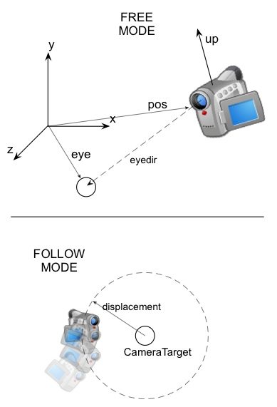
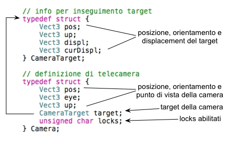

Pur non essendo un elemento visualizzato a schermo, la telecamera è un componente fondamentale per una buona simulazione 3D interattiva, essa “fa le veci” dell'occhio del giocatore e dovrebbe essere allo stesso tempo funzionale e “invisibile” all'utente, per poterlo aiutare ad immergersi meglio nella scena. In questo progetto la telecamera è stato uno tra i primi componenti realizzati e per non dover ricorrere a successive modifiche si è deciso di realizzarlo in modo che fosse flessibile, sufficientemente funzionale e in grado di adattarsi a diverse esigenze.
Il design della telecamera prevede in primo luogo che sia possibile gestire tre informazioni fondamentali: la posizione della stessa (pos), il punto della scena che la telecamera sta osservando (eye, purtroppo nella terminologia OpenGL questo termine indica la posizione dell'osservatore e non il suo punto di vista) e la direzione verticale alla telecamera (up).
Utilizzando queste tre semplici variabili, siamo già in grado di impostare le trasformazioni di vista in OpenGL, ad esempio utilizzando la funzione gluLookAt della libreria di supporto GLU. Si è preferito comunque aumentare le funzionalità per evitare di dover continuamente modificare manualmente questi valori: in particolare – vista la tipologia di gioco – si desidera realizzare una telecamera “ad inseguimento”, cioè che rincorre continuamente la posizione e la direzione della fusoliera dell'elicottero. Principalmente per motivi di debug, si è comunque interessati a gestire anche una modalità di vista “free” in cui l'utente può orientare e spostare la telecamera a suo piacimento.
Quando la telecamera è in modalità libera, questa viene spostata e orientata manualmente intervenendo sulle tre proprietà sopra descritte e il suo funzionamento è particolarmente semplice. Si utilizzano a tal scopo funzioni come moveCamera(), rotateCamera() e rollCamera() descritte in camera.h.
Quando la telecamera è in modalità inseguimento, il suo comportamento è decisamente più sofisticato. Questo è sopratutto dovuto al fatto che non si voleva una camera completamente “rigida” ovvero che inseguisse il proprio obiettivo in maniera istantanea e indipendente dalla posizione corrente: se l'elicottero si sposta, ruota o beccheggia la telecamera deve inseguirlo con una propria velocità e reattività, in modo che risulti più naturale e piacevole. Per raggiungere questo obiettivo è necessario introdurre un livello di indirettezza tra stato corrente della telecamera e stato “desiderato”, ovvero la posizione e l'orientamento dell'oggetto inseguito.
Si definisce allora la struttura
CameraTarget
che rappresenta la posizione che si desidera che la telecamera
assuma. Questa comprende la posizione del target, il suo upvector e –
sopratutto – il displacement
desiderato. Chiaramente, non si vorrà mai che la telecamera
raggiunga esattamente la posizione del proprio target, visto che in
quel caso non comparirebbe più nel tronco di vista (in OpenGL il
near plane non è mai impostabile a 0). Si vuole piuttosto che ne
insegua la posizione corrente ma che – una volta raggiunto –
resti ad una certa distanza (magari parametrizzabile) per poterlo
inquadrare; ecco spiegato il motivo del vettore di displacement: la
posizione che la telecamera deve assumere è data dalla somma del
vettore posizione del target e dal displacement. Per visualizzare
meglio il concetto si immagini una superficie sferica centrata nel
target e si ipotizzi di poter fissare la telecamera in un punto
qualsiasi di tale superficie e con l'obiettivo posto al centro della
sfera.
In qualsiasi momento, il target della telecamera è
impostabile richiamando la funzione setCameraTarget().
Resta da capire come passare da una modalità di funzionamento all'altra. In realtà anche su questo aspetto si è preferito mantenere una maggiore flessibilità e la telecamera può seguire dei comportamenti intermedi tra i due appena descritti. Tale comportamento è impostabile settando opportunamente il flag locks presente nella struttura della telecamera con dei valori predefiniti:
Sfortunatamente non c'è stato abbastanza tempo per permettere all'utente di passare liberamente tra le diverse modalità e di fatto vengono utilizzate soltanto la prima e l'ultima. Si utilizza il tasto C della tastiera per passare da una camera completamente libera al follow mode.
NB: la telecamera non effettua MAI alcun controllo delle collisioni, pertanto essa può attraversare qualsiasi oggetto, incluso il terreno.
NB: in modalità free, la posizione della telecamera non è controllata e l'utente può quindi raggiungere qualsiasi punto interno ed esterno alla scena.